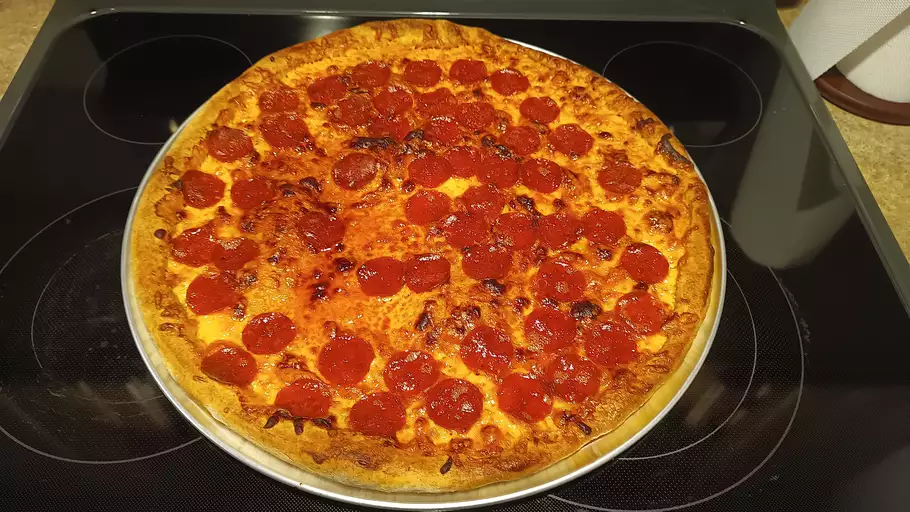

Pizza

Pizza, dish of Italian origin consisting of a flattened disk of bread dough topped with some combination of olive oil, oregano, tomato, olives, mozzarella or other cheese, and many other ingredients, baked quickly—usually, in a commercial setting, using a wood-fired oven heated to a very high temperature—and served hot.
ingredients
- 3 cups all-purpose flour/li>
- 1 tablespoon white sugar
- 1 (.25 ounce) package active dry yeast
- 1 teaspoon salt
- 1 cup warm water (110 degrees F/45 degrees C)
- 2 tablespoons vegetable oil
Steps
- Gather all ingredients.
- Combine flour, sugar, yeast, and salt in a large bowl. Mix in warm water and oil until dough comes together.
- Preheat the oven to 375 degrees C (190 degrees C). Pat and stretch dough onto a large pizza pan. Cover with desired toppings. Bake in the preheated oven until crust is lightly browned, 20 to 25 minutes.